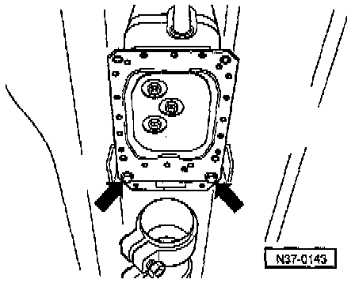
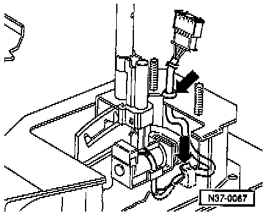
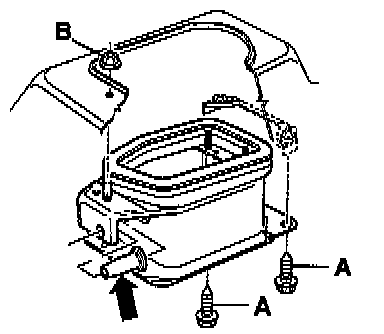

Shift Cable: Service and Repair

COMPONENT NOTES AND INFORMATION
1 Ignition/Starter switch
2 Locking cable
- Must not be kinked
- Adjusting, refer to Starting and Charging.
- Removing and installing, refer to Starting and Charging.
3 Clip
- For securing locking cable
- Always replace
4 Selector lever handle
5 Set screw
- Tighten to: 1.5 Nm (13 inch lb)
6 Cover
- With selector indicator
7 Protective sleeve for selector lever
8 Cover strip
- Insert in cover -item 6-
9 Selector lever
- Disassembling and assembling, refer to Disassembly/Assembly. Service and Repair
- To remove selector lever, remove lower protective plate, remove front protective plate and push forward.
- When installing selector lever, insert locking cable anchorage in notch of selector lever housing.
- Securing wiring harness to selector lever housing, refer to Fig. 2, below.
10 Nuts
- To secure central console
11 Spacer
12 Gasket
- Always replace
13 Selector lever housing
- Need not be removed to replace selector lever cable or individual parts of shift mechanism
- Removing and installing, refer to Fig. 1, below.
14 Screw
- Tighten to: 25 Nm (18 ft lb)
15 Nut
- Tighten to: 15 Nm (11 ft lb)
- Always replace
- Quantity used 3
16 Protective sleeve
- Insert into selector lever housing before attaching selector lever cable, refer to Fig. 4, below.
17 Nut
- Tighten to: 25 Nm (18 ft lb)
- With shoulder
18 Selector lever cable
- To remove selector lever, remove lower protective plate, separate exhaust system in front of catalyst (remove catalyst on 6-Cyl. engines) and remove front protective plate.
- Do not bend or kink.
- Lightly grease cable eye and cable ends before installing.
- Tighten selector lever cable on cable anchorage/selector lever housing to: 20 Nm (15 ft lb).
19 Seal
- Bonded to cable anchorage
- Replace if damaged
- Check guide tube for tight fit.
- Check protective sleeve between console and lever/gearshift shaft for proper seating and secure selector lever cable with corrugated locking element, -item 28-
- Attach selector lever cable to selector lever, refer to Fig. 3, below.
- Adjusting, refer to Checking/Adjusting. Adjustments
20 Circlip
- Install after installing selector lever cable, refer to Fig. 4, below.
21 Washer
22 Bolt
- Tighten to: 6 Nm (53 inch lb)
23 Transmission
24 Lever
- For selector shaft
25 Console
- With cable anchorage for selector lever cable
26 Washer
27 Combi-bolt
- Tighten to: 25 Nm (18 ft lb)
28 Corrugated locking element
- For selector lever cable
- Always replace
PROCEDURES

Fig. 1 Selector installing lever housing, removing and installing
- Remove rear central console.
- Remove hex nut.
- Remove lower protective plate.
- Disconnect Oxygen Sensor connector, separate exhaust system in front of catalyst (remove catalyst on vehicles with 6-Cyl. engine).
- Remove front protective plate and rear bolts (arrows).

Fig. 2 Wiring harness, securing to selector lever housing
- Press harness into clips and into selector lever housing (arrows).

Fig. 3 Selector lever cable to selector lever, attaching
- install selector lever cable eye (arrow) on selector lever and secure with circlip.

Fig. 4 Boot, inserting in selector lever housing
- Before installing the selector lever cable insert boot (arrow).